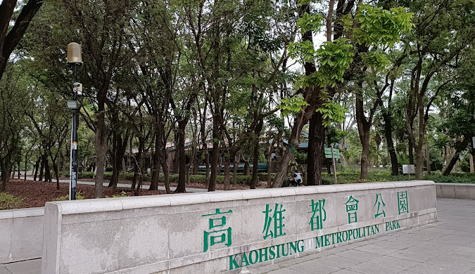
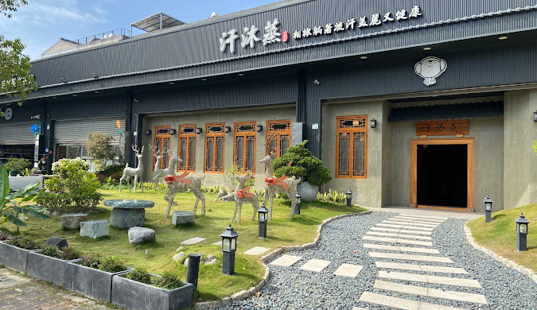

走讀高雄－楠梓區域



楠梓區產業以工商業為主，過去因中油設立高雄煉油總廠以及經濟部設立楠梓加工出口區（今楠梓科技產業園區），而帶動本區經濟發展及人口流入，經濟部加工出口區管理處即位於本區，管轄台灣所有科技產業園區，1987年，楠梓區人口超越左營區成為原高雄市第三大區，1988年更超越鼓山區成為該市第二大區。後來因加工業衰退造成園內廠商大幅遷出，區域及人口發展進入停滯，1999年，楠梓區人口再度被左營區反超 。 2013年，高雄市政府輔助及重新打造園內產業轉型，使加工區產業轉型為科技發展且規劃楠梓第二園區，重新帶回廠商進駐、就業機會及人口移入，2019年11月底，楠梓區人口正式超越前鎮區，成為高雄市的第四大區，但由於土地利用趨近飽和，使得本區的人口成長率已逐漸趨緩。 至今楠梓區為北高雄重要工商核心之一。區內並形成以楠仔坑（車站一帶）、右昌、後勁、翠屏（德賢路至惠民路一帶）四區為主的商業活動聚集區。雖然本區受大學人口及加工區勞動人口而得以發展，但本區受地形阻隔，區位與市區斷裂且邊緣，致使無大型資源或市轄建設於此。不過因中油煉油廠遷廠，國發會通過「南部科學園區擴建高雄第三園區籌設計劃」，計畫將中油煉油廠區轉型成南部科學園區高雄第三園區。
以上取自維基百科

Copyright © 2024 · All Rights Reserved